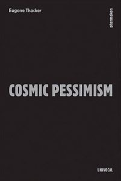

Thacker, Eugene. Cosmic Pessimism. Minneapolis: Univocal Publishing, 2015. ISBN-10: 193756147X. E-book, paperback. 55 pages.
It might be worth quoting from the beginning of this pocket-sized, 69-page book to give a sense of its style and subject:
We’re doomed. Pessimism is the night-side of thought, a melodrama of the futility of the brain, a poetry written in the graveyard of philosophy. Pessimism is a lyrical failure of philosophical thinking, each attempt at clear and coherent thought, sullen and submerged in the hidden joy of its own futility… Every effort doomed to failure, every project doomed to incompletion, every life doomed to be unlived, every thought doomed to be unthought. (3)
It is conceded, on the same opening page, that “pessimism is the lowest form of philosophy, frequently disparaged and dismissed, merely the symptom of a bad attitude.” A peculiar double standard is alluded to here, one that is evident in work on the problem of evil in the philosophy of religion. Believers have no problem assuming, or even finding, a reason for every evil, great and small, and some of them will go so far as to claim that this world is the best possible. With Leibniz, they adopt religious authority (church teaching, scripture) as their starting point, and so their procedure is to begin with God (specifically, with the view that God is good, holy and just) and then to infer from that the nature or character of the world (given that God is good, holy and just, God would create nothing less that the best possible world): “he did this, therefore he did it well,” as Leibniz put it in his Theodicy.
Voltaire famously reversed Leibniz’s procedure, and sought to infer from the character of the world the character of the creator who is responsible for it. In Candide, in the wake of the Lisbon earthquake, the protagonist (Candide) is depicted as “terrified, dumbfounded, bewildered, covered with blood, quivering from head to foot,” and then asks: “If this is the best of all possible worlds, what are the others like?” By turning the tables on Leibniz, Voltaire is led to the conclusion that the creator must be a moral monster, or at least distant and disinterested.
Who, then, is guilty of a ‘bad attitude’? The pessimist is often presented as a disappointed idealist, as an adolescent who hasn’t overcome the trauma of discovering that the world and its authority-figures are not as reliable and benevolent as was initially supposed in childhood. And so the pessimist, like a pale, sickly emo youth, responds to the world with ressentiment, believing nothing and rejecting all values, even those of truth and morality. But if there is a serious attitude problem it would seem to lie, instead or equally as much, with the optimistic Pangloss, ever prepared to ‘gloss’ everything, governed as he might be by unshakeable theoretical commitments such as the Principle of Sufficient Reason (in Leibniz’s case) or the idea that the real coincides with the rational (in the case of Hegel).
Kant, at least, recognised that theodicy was buried in the ruins of Lisbon, that a ‘critical’ as opposed to a dogmatic approach to philosophy has made impossible the identification of reality and rationality, happiness and virtue, or the descriptive and the normative. A chasm opens up between the way the world is and the way the world ought to be, and for the pessimist no reconciliation between the two is possible. Hope and redemption, at least in any ultimate or cosmic sense, are rejected as illusory. Is this nihilism, or realism?
Theo Angelopoulos, the Greek auteur known for his dark and desolate cinematography, sought to question such questions by transcending the divide between optimism and pessimism (or, at least, avoiding the dubious assumptions of each). In his view, “Optimists usually turn their backs on reality; they invent false reasons for believing things have to improve. On the other hand, the only acceptable conclusion for pessimists is to stop and commit suicide.”[1] How does Eugene Thacker respond to this dilemma?
The difficulty of outlining, let alone assessing, Thacker’s view lies in part in the style and structure of his book. He writes in the aphoristic tradition of Schopenhauer, Nietzsche and Cioran – a style that is sadly marginalised in our era of technical and professional scholarly production. The space to think, like Thacker does here, in an urgent, personal and radical manner seems to be diminishing by the day in the highly managerialised and corporatised academic industry.
While some of Thacker’s apopthegms fall flat, others are genuine gems, like the one that introduces the book: “There is no philosophy of pessimism, only the reverse.” This sets up one of the paradoxes of pessimism, indicated by Angelopoulos: its self-defeating nature. Consider also: “A philosophy exists between the axiom and the sigh. Pessimism is the wavering, the hovering.” (47) Or the sardonic humour of: “Are you a pessimist?” “On my better days…” (58) And, near the end, in seeming self-reference: “One never writes a book of fragments. What one ends up with is less than a book. Or more than a book.” (69)
Early on, Thacker ‘anatomises’ pessimism into two parts: a moral/subjective variety, according to which “it is better not to have been born at all”; and a metaphysical/objective variety, where it is held that “this is the worst of all possible worlds.” (10) In its dialectic, Thacker goes on to say, pessimism passes through three refusals: a Schopenhaurian rejection of the world-for-us, a Nietzschean ‘no’ to the world-in-itself (with its concomitant ‘yes’ to the worst in the world as we find it), and finally a rejection of this and any other world, this last refusal epitomised by Cioran (“that gloomy prowler of the Latin Quarter,” 45).
But the subject of Thacker’s book, cosmic pessimism, is another breed of pessimism entirely: “a pessimism of the world-without-us.” (12) Thacker describes this as “a pessimism about cosmos, about the necessity and possibility of order,” before adding that “the contours of cosmic pessimism are a drastic scaling-up or scaling-down of the human point of view, the unhuman orientation of deep space and deep time, and all of this shadowed by an impasse, a primordial insignificance…”. (12-13)
Thacker then turns to some of the moods and affects associated with pessimism, such as the sense of gloom and doom, and feelings of spite and sorrow. On doom, Thacker writes: “Doom is not just the sense that all things will turn out badly, but that all things inevitably come to an end.” (20) I would have liked to see the connection between death and pessimism explored further, particularly since it is assumed by some that death (interpreted as the complete annihilation of human consciousness) threatens to empty life of value, while others regard temporal finitude as a necessary condition for freedom, individuality and existential meaning.
The idea of the inherent impossibility of pessimism is a recurring theme. Thacker points out that Nietzsche objected to the self-defeating character of Schopenhauer’s pessimism, and in one of the funniest moments in Thacker’s book we are told that “Schopenhauer was so successful at being this type of pessimist that a reviewer of one of his books assumed that Schopenhauer was already dead.” (57) Thacker notes, however, that if life, for Schopenhauer, is a noose, for Cioran it “is a noose, improperly tied.” (53)
In Cioran’s very first book (published in 1934, at the mere age of 22), entitled On the Heights of Despair (in reference to the obituary notices of the time which commonly took the form: “On the heights of despair, young so-and-so took his life…”), the futility of suicide is highlighted: “Why don’t I commit suicide? Because I am as sick of death as I am of life.”[2] There is no logic here, but only nausea-inducing absurdity: “If I were to be totally sincere, I would say that I do not know why I live and why I do not stop living. The answer probably lies in the irrational character of life which maintains itself without reason.”[3]
But this is where greater clarity would have been helpful. Despite the anti-philosophical vein coursing through Thacker’s book (he writes, for instance, that “Pessimism abjures all pretenses towards system – towards the purity of analysis and the dignity of critique,” p.13), something more than a cursory and lyrical account of Thacker’s preferred variety of pessimism – ‘cosmic pessimism’ – would have helped set the scene as to what exactly it is that he is pessimistic about, and what might be the grounds for such pessimism. This, in turn, may have provided some clues as to how Thacker seeks to negotiate the impasse recognised by Cioran about suicide, or what Thacker describes as the suicide of thought, the ‘pessimism of philosophy’, where thinking itself is a dead-end, “an awareness that, from the start, it has already failed.” (5)
I want to conclude, nonetheless, with two interesting observations made by Thacker, the first concerning death. If, as Plato thought, philosophy is a training for death (Phaedo 67 c-d), then to what extent have the great pessimist philosophers of the past lived up to this ideal? Thacker considers the contrasting deaths of Schopenhauer and Nietzsche (Nietzsche’s dramatic collapse in Turin and the ensuing madness and manipulations of his sister, as compared with Schopenhauer’s peaceful passing in his sleep), but finds nothing particularly ‘philosophical’ in each (67-68).
Thacker then looks to Nicolas Chamfort, an 18th-century French writer who, although not traditionally regarded as a philosopher, is said to provide a model for ‘dying philosophically’. Facing imprisonment for his criticism of the government, Chamfort decided to commit suicide but abjectly failed (though he did eventually die from the self-inflicted wounds). Here is Thacker’s summary of the debacle:
According to a friend, Chamfort calmly finished his dinner, excused himself, and went into his bedroom, where he loaded a pistol and fired it at his forehead. But he missed, injuring his nose and blowing out his right eye. Grabbing a razor, he then tried to slit his own throat – several times. Still alive, he then stabbed himself repeatedly in the heart, but to no avail. His final effort was to cut both wrists, but this again failed to produce the desired effect. Overcome with either pain or frustration, he cried out and collapsed into a chair. Barely alive, he reportedly said, “What can you expect? One never manages to do anything successfully, even killing oneself.” (68-69)
Here, at the close of the book, concluding with the futility of seeking an exit from death or from life, Thacker’s humour reaches its blackest moment.
Even more interesting are Thacker’s observations on a certain genre of books, those “that are written not to be read.” (59) These books, we are told, are as obscure and difficult to find as their authors, “most of whom have gone mad or mysteriously disappeared.” (59) These are books which, even if present in a library catalogue, are almost always absent from the stacks, never to return. These are books that have an all-consuming quality: they consume us as we consume them.
Deferring to little known manuals from previous centuries – in particular, Thomas Frognall Dibdin’s The Bibliomania; or, Book-Madness (1809) and Holbrook Jackson’s Anatomy of Bibliomania (1930) – Thacker notes that the ailment begins as ‘bibliophilia’, a common love of books, but later erupts into ‘bibliomania’, a book madness that may well lead to ‘bibliophagia’, where readers “are so consumed by their books that they eat them.” (61)
Thacker’s black comedy rises once more to the surface. And even if the connection with pessimism is not made explicit, I take it that in a world bereft of illusions and lights the act of writing or creating can no longer be one of “blasting and bombardiering” (à la Wyndham Lewis), but one of disappearing, becoming in the words of Rumi “melting snow… a sheet of paper with nothing on it.” As a result, to quote Thacker’s words again, “What one ends up with is less than a book. Or more than a book.”
N.N. Trakakis is Senior Lecturer in Philosophy at the Australian Catholic University. His publications include The God Beyond Belief (2007), The End of Philosophy of Religion (2008), and (as editor, with Graham Oppy) The History of Western Philosophy of Religion, vols 1-5 (2009). He also writes and translates poetry, his latest collection being After Life (2016).
_____________________________________________________________
[1] Theo Angelopoulos: Interviews, ed. Dan Fainaru (Jackson: University Press of Mississippi, 2001), 100.
[2] E.M. Cioran, On the Heights of Despair, trans. Ilinca Zarifopol-Johnston (Chricago: The University of Chicago Press, 1992), 56.
[3] Cioran, On the Heights of Despair, 33.